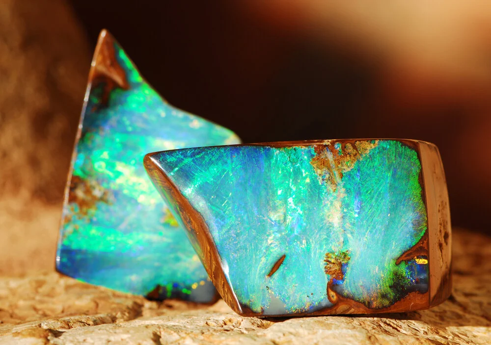

化学式
SiO2・nH2O
オパールは、シリカと水が結びついた鉱物であり、球状のシリカがその特徴的な虹色の輝きを形成します。
宝石言葉・石言葉
「創造力」「直感力」「感情のバランス」「愛と情熱」
SiO2・nH2O
オパールは、シリカと水が結びついた鉱物であり、球状のシリカがその特徴的な虹色の輝きを形成します。
「創造力」「直感力」「感情のバランス」「愛と情熱」
オーストラリア、メキシコ、ブラジル、エチオピア、ハンガリー等
オパールは、10月の誕生石として広く知られ、その虹色の輝きが特徴です。オパールは古代から希望と純粋さを象徴する宝石とされ、多くの文化で高く評価されてきました。その名前はサンスクリット語の「upala」（宝石）に由来しています。
オパールは、シリカの鉱物の一種で、その虹色の輝きは内部の微小なシリカ球体が光を屈折させることによって生じます。最高品質のオパールは、全ての色が見える「プレシャスオパール」として珍重されます。
オパールは、持ち主に創造力と直感力をもたらし、感情のバランスを保つ助けをすると信じられています。また、愛と情熱を象徴し、関係を深める力があるとも言われています。
オパールは、創造力や直感力を求める人、感情のバランスを重視する人、または愛と情熱を大切にする人に特におすすめです。この石を身につけることで、内面の豊かさを感じ、深い人間関係の築き方をサポートするでしょう。